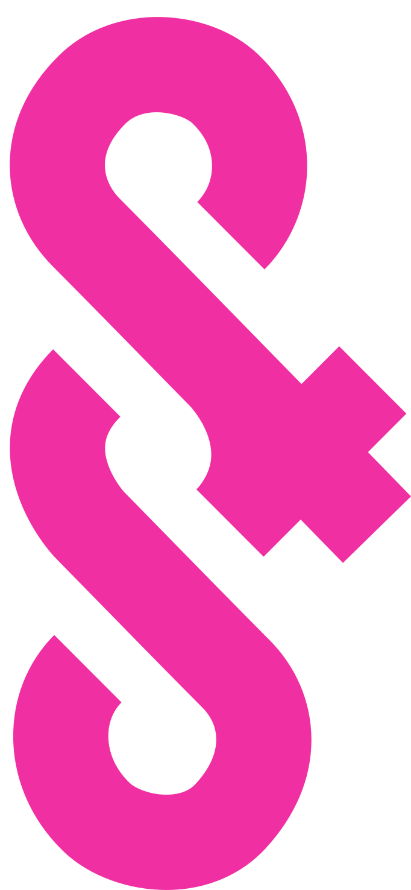

UNIDCOM/IADE 14th Biennial International Conference in DesignSenses & Sensibility'27
Save the date(Un)folding FuturesSenses & Sensibility 2027Lisbon*PortugalCall for papers soonSave the date(Un)folding FuturesSenses & Sensibility 2027Lisbon*PortugalCall for papers soon

Save the date
(Un)foldingFutures
Futures are not destinations. They are relational, and they are ours to shape.